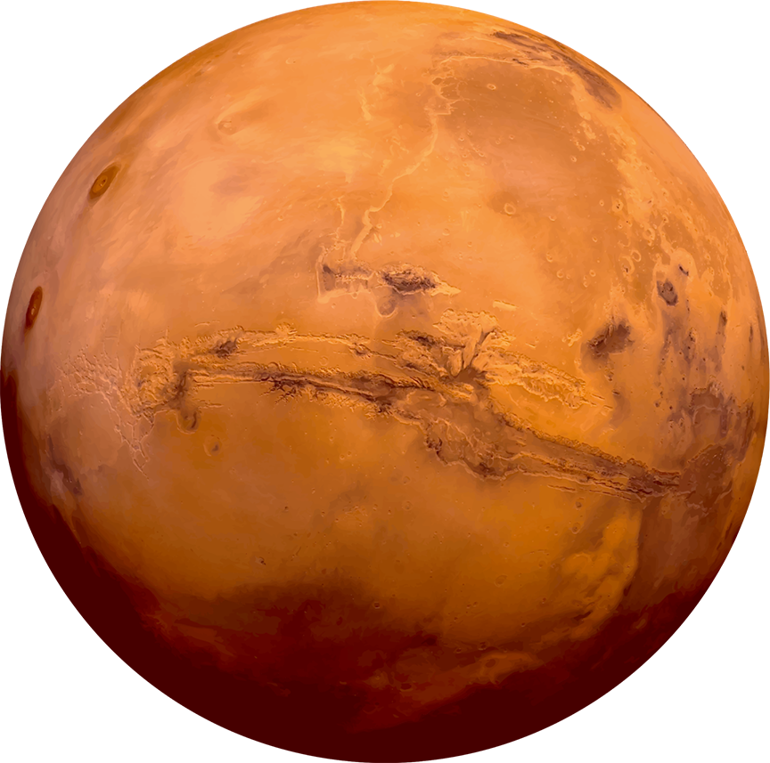

Let's Explore The Universe





Welcome to the enchanting realm of space! It's a vast expanse of cosmic wonders that extends beyond our planet. Brace yourself for a celestial journey as we explore the mysteries of the universe. Discover breathtaking galaxies, awe-inspiring nebulae, and distant star systems. From the scorching infernos of massive stars to the icy landscapes of distant planets, space holds an incredible variety of celestial landscapes. The secrets of the cosmos, marvel at the beauty of distant worlds, and embrace the vastness of space.
Prepare for an adventure beyond imagination as we embark on a voyage through space! This is your gateway to the wonders of the universe. Delve into the triumphs of space exploration, from the iconic moon landing to groundbreaking discoveries. Learn about the planets in our solar system, each with its own unique characteristics and intriguing features. Encounter captivating phenomena like black holes and pulsars that challenge our understanding of the cosmos. As we navigate the cosmic tapestry, igniting curiosity and inspiring a sense of wonder about the vastness of space.